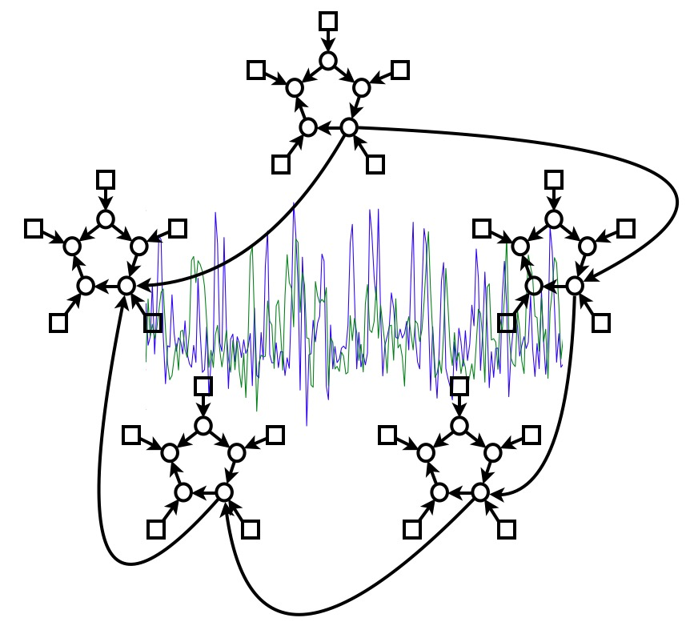
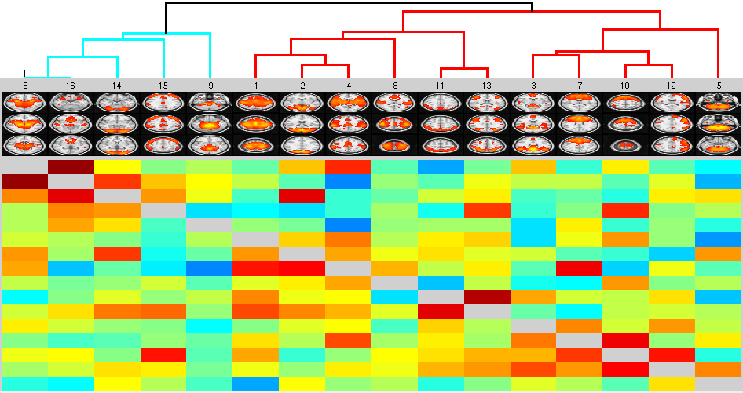

Contents
- Introduction
Contents
- Further Information
Overview
FSLNets v0.5 is a set of simple MATLAB scripts for carrying out basic network modelling from (typically FMRI) timeseries data. This beta-version package requires you to have various other software than just FSL, such as MATLAB (or Octave), and for now is not bundled as part of FSL. It has only been tested with MATLAB and Octave running on Linux/Mac.
Version 0.5 has various improvements over the previous versions, including Octave compatibility and "help" for all functions (type "help functionname"). See the README file for a brief list of backwards incompatibilities.
The main thing you will feed into FSLNets network modelling is N timecourses from S subjects' datasets - i.e., timeseries from N network nodes. For display purposes you will also need the spatial maps associated with the nodes (one map per node). For example, a good way to get these timeseries and spatial maps is to use MELODIC group-ICA with a dimensionality of N, to get the group-level spatial maps, and then use dual regression to generate S subject-specific versions of the N timecourses. Alternatively, you might have used a set of template images or ROIs from another study, to feed into the dual regression.
Now you are ready to compute a network matrix for each subject, which in general will be an NxN matrix of connection strengths. The simplest and most common approach is just to use "full" correlation, giving an NxN matrix of correlation coefficients. Or, you might want to estimate the partial correlation matrix, which should do a better job of only estimating the direct network connections than the full correlation does. Once you have estimated a network matrix for each subject, you can then test these matrices across subjects, for example, testing each matrix element for a two-group subject difference, or feeding the whole matrices into multivariate discriminant analysis.
Installing FSLNets
Requirements:
- MATLAB or Octave:
- For MATLAB, you will need the official MATLAB toolboxes:
- Statistics (you must have this one)
- Bioinformatics (if you want to use MATLAB's SVM)
- Signal Processing (if you want to see timeseries spectra)
- For Octave, you will need Octave version 3.8.0 or later, as well as toolboxes:
- control (v2.6.2 or greater)
- general (v1.3.4 or greater)
- signal (v1.3.0 or greater)
- statistics (v1.2.3 or greater)
- For MATLAB, you will need the official MATLAB toolboxes:
- LIBSVM (setup for MATLAB or Octave - if you want to use the LIBSVM implementation of SVM for netmat-based classification)
L1precision free third-party MATLAB toolbox (to estimate L1-norm regularised partial correlation matrices)
Pairwise causal free third-party MATLAB toolbox (if you want to look at causal directionalities)
Setup FSLNets:
Unpack FSLNets with tar xvfz fslnets.tar.gz (or tar xvf fslnets.tar if your browser has already uncompressed the file).
See the top of the file nets_examples.m, which you can edit to point to the paths of the various additional toolboxes listed above.

Running FSLNets
Take a copy of nets_examples.m (for example cp nets_examples.m my_nets.m ) and edit this new file with your own settings. To run inside MATLAB, just copy individual lines, one at a time, into MATLAB from your new file, or, once it is ready, just type my_nets in MATLAB.
The file nets_examples.m is fairly well documented, with each stage of the analysis hopefully fairly clear and easy.